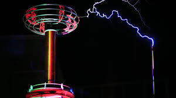

¿Quienes somos?
Mision
Nuestra mision es...
Vision
Nuestra vision es:
Valores
Nuestros valores son:
Organigrama
Nosotros nos organizamos asi:
Nuestra filosofia
Filosofia Bushido
En el antiguo Japón, los guerreros Samurái vivieron siguiendo la filosofía del Código Bushido (Bushido significa “Camino del Guerrero”). ¿Cómo sería nuestra gestión de liderazgo si al igual que los guerreros Samurái, nuestras decisiones y acciones estuvieran basadas en principios? ¿Qué pasaría si como Líderes adoptáramos la actitud y disciplina de los guerreros Samurái?
El Código Bushido es un código ético muy estricto compuesto por 7 principios: integridad, respeto, valor, honor, compasión, honestidad y lealtad. Estos 7 principios permitieron a los Samurái ser los hombres más poderosos y fieros de su época, y a la vez los más justos y honorables.
- INTEGRIDAD. Para un auténtico Samurái, no existen las tonalidades de gris en lo que se refiere a honradez y justicia, solo existen lo correcto y lo incorrecto.
- RESPETO. Los Samurái no tienen motivos para ser crueles. No necesitan demostrar su fuerza. Un Samurái es cortés incluso con sus enemigos. Un Samurái recibe respeto no sólo por su fiereza en la batalla, sino también por su manera de tratar a los demás. La auténtica fuerza interior del Samurái se vuelve evidente en tiempos de apuros.
- VALOR. Un Samurái tiene valor heroico, toma riesgos, vive la vida de forma plena y completa. El coraje heroico no es ciego, es inteligente y fuerte. El Samurái reemplaza el miedo por el respeto y la precaución.
- HONOR. El auténtico Samurái sólo tiene un juez de su propio honor, y es él mismo. Las decisiones que tomas y cómo las llevas a cabo son un reflejo de quién eres en realidad. No puedes ocultarte de ti mismo.
- COMPASIÓN. El Samurái desarrolla un poder que debe ser usado en bien de todos, tiene compasión. Ayuda a sus compañeros en cualquier oportunidad. Y si la oportunidad no surge, se sale de su camino para encontrarla.
- HONESTIDAD. Cuando un Samurái dice que hará algo, es como si ya estuviera hecho. Nada en esta tierra lo detendrá en la realización de lo que ha dicho que hará. No ha de “dar su palabra” no ha de “prometer”, el simple hecho de hablar ha puesto en movimiento el acto de hacer. Hablar y hacer son la misma acción.
- LEALTAD. Haber hecho o dicho “algo”, significa que ese “algo” le pertenece. Es responsable de ello y de todas las consecuencias que le sigan. Un Samurái es intensamente leal a aquellos bajo su cuidado. Para aquellos de los que es responsable, permanece fieramente fiel.